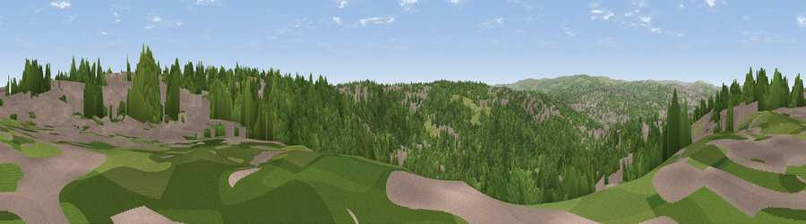

Viewpoint near Sheffield
#26963 in England · top 45% of its area beats it · near Sheffield · footpathWhere it is
The exact computed spot (SK 37075 84525). Click the marker for map links.
Public access: a public right of way passes within 34 m of this spot. Computed from Natural England's CRoW access layer and OpenStreetMap rights of way — not the legal definitive map. Always verify locally.
The view, rendered

A 360° render of this exact spot computed from the terrain model, tree cover and land cover — summer colours, afternoon light, calibrated against photographs of famous viewpoints. Real trees, hedges and buildings will differ in detail.
The panorama
Grey silhouette: terrain skyline in each direction (720 bearings, Earth curvature and refraction included). Dashed green: skyline with trees (+15 m) and buildings (+8 m) as obstacles. Blue strip: how far the ground is visible on each bearing.
Where the view opens
Wedge length = distance to the farthest visible ground on that bearing (vegetation-aware). Rings at 10, 25 and 50 km.
What fills the view
57% woodland · 31% built-up · 12% grassland
Angular shares of the visible panorama (visual magnitude), not map area. Landscape diversity 0.43 (0–1 Shannon).
Key numbers
More beautiful places nearby
The staircase of upgrades: each row has a higher view potential than everything closer. Driving times are estimates from straight-line distance, calibrated against real road routing — check an actual route before setting out.
| Place | Direction | Drive | Score |
|---|---|---|---|
| Viewpoint near Ridgeway | ESE · 3 km | ~7 min | 48.6 |
| Viewpoint near Ridgeway | SE · 4 km | ~9 min | 67.6 |
| Viewpoint near Holmesfield | SW · 10 km | ~19 min | 69.4 |
| Viewpoint near Oughtibridge | NNW · 11 km | ~20 min | 70.0 |
| Viewpoint near Hathersage | W · 12 km | ~22 min | 70.9 |
| Viewpoint near Whitley | NNW · 12 km | ~23 min | 72.1 |
| Viewpoint near Wharncliffe Side | NNW · 13 km | ~24 min | 75.2 |
| Tissington Hill | SW · 39 km | ~58 min | 75.5 |
53.35631, -1.44443 · source: screening · position refined by local search. Computed location — check access rights before visiting.